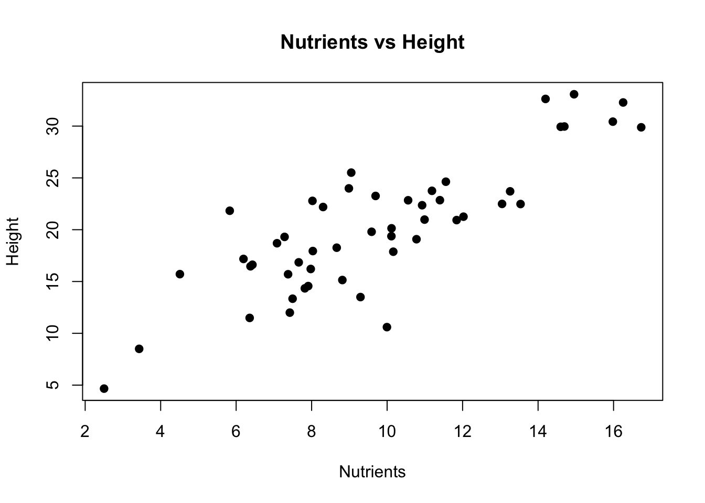
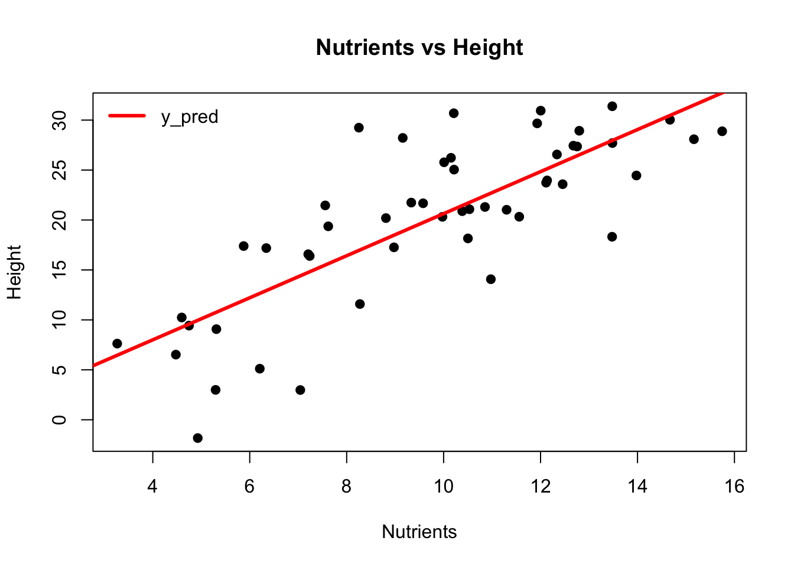
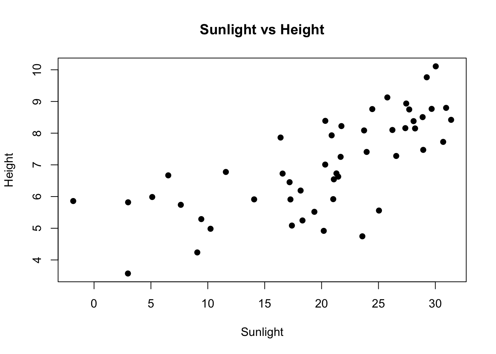
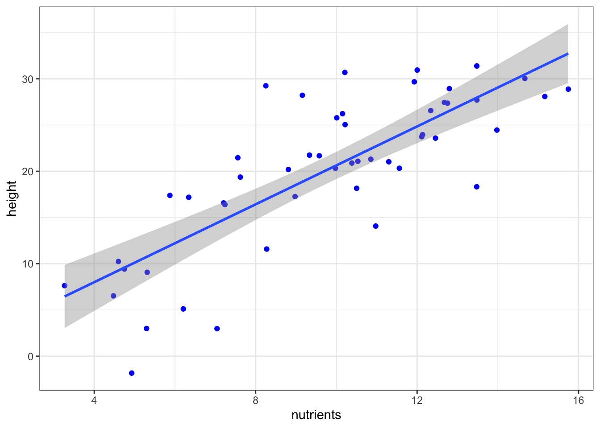

nutrients <- rnorm(50, mean = 10, sd = 3)
height <- 2 * nutrients + rnorm(50, mean = 0, sd = 5)
data_plant_nutrient <- data.frame(nutrients, height)Association between variables
Linear Regression
Used to predict a continuous outcome based on one or more predictors.
Formula
\(y = \beta_0 + \beta_1x_1 + ... + \beta_nx_n + \epsilon\)
\(y\) - dependent variable (response)
\(x\) - independent variable (predictor)
\(\beta_0\) - intercept - value of \(y\), when \(x=0\)
\(\beta_i\) - coefficients - values by which \(y\) is changed when the corresponding \(x_i\) is increased by 1.
\(\epsilon\) - so-called error - differences between real \(y\) values and esimated by model values
Formula of model (linear)
\(y_{pred} = \beta_0 + \beta_1x_1 + ... + \beta_nx_n\)
Assumptions
- Homoscedasticity: Residuals have constant variance (~) - \(\sigma^2(\epsilon) = const\)
- Mean of residuals is close to zero
- Stricter assumption: residuals are normally distributed around zero (~) - \(\epsilon \sim Norm(0, \sigma^2)\)
This assumption is equivalent to normality of \(y\)
- Stricter assumption: residuals are normally distributed around zero (~) - \(\epsilon \sim Norm(0, \sigma^2)\)
- Observations \(y_i\) are independent (not correlated) (~)
- Linearity: The relationship between variables is considered to be linear.
(~) denotes assumptions needed for hypotheses testing and confidence estimation only
Simple linear regression
Linear regression model with one dependent \(y\) (response) and one independent variable \(x\) (predictor). Simple line which estimate linear relationship between \(x\) and \(y\).
Formula of model
\(y_{pred} = \beta_0 + \beta_1x_1\)
Can plant height be predicted based on soil nutrient levels?
Data
plot(nutrients, height, main = "Nutrients vs Height",
xlab = "Nutrients", ylab = "Height",
pch=19)
Model creation
model <- lm(height ~ nutrients, data = data_plant_nutrient)
model
Call:
lm(formula = height ~ nutrients, data = data_plant_nutrient)
Coefficients:
(Intercept) nutrients
-0.4156 2.1051 plot(nutrients, height, main = "Nutrients vs Height",
xlab = "Nutrients", ylab = "Height",
pch=19)
abline(model, col = "red", lwd=3)
legend("topleft",
legend = c("y_pred"),
col = c('red'),
bty = 'n', lwd=3)
Model summary
summary_model = summary(model)
summary_model
Call:
lm(formula = height ~ nutrients, data = data_plant_nutrient)
Residuals:
Min 1Q Median 3Q Max
-11.7879 -2.4489 -0.2064 3.1982 12.2885
Coefficients:
Estimate Std. Error t value Pr(>|t|)
(Intercept) -0.4156 2.4154 -0.172 0.864
nutrients 2.1051 0.2359 8.925 9.16e-12 ***
---
Signif. codes: 0 '***' 0.001 '**' 0.01 '*' 0.05 '.' 0.1 ' ' 1
Residual standard error: 5.174 on 48 degrees of freedom
Multiple R-squared: 0.624, Adjusted R-squared: 0.6161
F-statistic: 79.65 on 1 and 48 DF, p-value: 9.158e-12Residuals
Difference between values of observed data (\(y_i\)) and estimated by linear model values \(y_{pred,\space i}\) for each \(x_i\)
- \(y_i-y_{pred,\space i}\)
# model$residuals
residuals(model)Coefficients:
Estimate the effect of \(x\) on the value of \(y\).
Their values are estimated to minimize \(MSE = \sum (y_i - y_{pred,\space i})^2\) (Squared sum of errors)
# model$coefficients
coefficients(model)(Intercept) nutrients
-0.415574 2.105060 p-values Pr(>|t|): Test the null hypothesis that coefficients are zero (t-test).
\[t = \dfrac{Estimated\space coefficient}{Std. Error} = \dfrac{\beta_i}{\sqrt{\frac{\sigma_{residuals}}{\sum(x_i-\overline{x})^2}}} = \dfrac{\beta_i}{\sqrt{\frac{1}{n-2}*\frac{\sum(y_i-y_{pred,\space i})^2}{\sum(x_i-\overline{x})^2}}}\]
- More informative for slope than for intercept
# summary_model$coefficients[,3:4]
summary_model$coefficients Estimate Std. Error t value Pr(>|t|)
(Intercept) -0.415574 2.4154069 -0.1720513 8.641205e-01
nutrients 2.105060 0.2358715 8.9246038 9.157841e-12Residual standard error
\[Residual\space Standard\space Error\space (RSE) = \sqrt{\dfrac{\sum (y_i - y_{pred})^2}{df}}\]
\(df = n - p\), where \(n\) - number of observations and \(p\) is number of estimated parameters (in our case they are slope and intercept).
summary_model$sigma[1] 5.173587R-squared
Proportion of variance explained by the model
\[R^2 = 1 - \dfrac{\sum(y_i - y_{pred})^2}{\sum(y_i-\overline{y})^2} = 1-\dfrac{SSR}{SST}\]
- For simple linear regression is equal to squared Pearson correlation coefficient \(\rho^2\)
summary_model$r.squared[1] 0.6239675Adjusted R-squared:
Penalizes for the number of predictors to avoid overestimating the model’s explanatory power when additional (possibly irrelevant) predictors are added
\[\overline{R}^2 = 1 - \dfrac{\dfrac{\sum(y_i - y_{pred})^2}{n-p}}{\dfrac{\sum(y_i-\overline{y})^2}{n-1}} = 1-\dfrac{\dfrac{SSR}{n-p}}{\dfrac{SST}{n-1}}\]
\(p\) - number of parameters, \(n\) - number of observations
summary_model$adj.r.squared[1] 0.6161335F-statistic
Tests the overall significance of the regression model.
\[F = \dfrac{\frac{\sum(\overline y - y_{pred,\space i})^2}{p-1}}{\frac{\sum(y_i-y_{pred,\space i})^2}{n-p}} = \dfrac{\frac{SSR}{p-1}}{\frac{SSE}{n-p}} = \dfrac{MSR}{MSE}\]
\(p\) - number of parameters, \(n\) - number of observations
- p-values are calculated according to Fisher distribution
- In simple linear regression, it is equivalent to the t-test for the slope.
# pf(summary_model$fstatistic[1], summary_model$fstatistic[2],
# summary_model$fstatistic[3], lower.tail = FALSE)
summary_model$fstatistic value numdf dendf
79.64855 1.00000 48.00000 A higher F-statistic indicates that the model’s explained variability (MSR - Regression mean squares) is large relative to the unexplained variability (MSE - Mean of squares error), suggesting that the regression model is capturing a significant relationship.
F-test
anova(model)Analysis of Variance Table
Response: height
Df Sum Sq Mean Sq F value Pr(>F)
nutrients 1 2131.9 2131.87 79.649 9.158e-12 ***
Residuals 48 1284.8 26.77
---
Signif. codes: 0 '***' 0.001 '**' 0.01 '*' 0.05 '.' 0.1 ' ' 1Multiple Linear Regression
Several independent variables (predictors)
Formula of model
\(y_{pred} = \beta_0 + \beta_1x_1 + ... + \beta_nx_n\)
Adding one more predictor for plant height model
sunlight_hrs = rep(5:9, each=10) + rnorm(50, 0, 1)
data_plant_nutrient = data_plant_nutrient %>% arrange(height) %>% cbind(sunlight_hrs)
data_plant_nutrient %>% str()'data.frame': 50 obs. of 3 variables:
$ nutrients : num 4.93 7.04 5.3 6.21 4.48 ...
$ height : num -1.83 2.98 2.99 5.11 6.52 ...
$ sunlight_hrs: num 5.86 3.57 5.82 5.99 6.67 ...plot(data_plant_nutrient$height, data_plant_nutrient$sunlight_hrs,
main = "Sunlight vs Height",
xlab = "Sunlight", ylab = "Height",
pch=19)
Additive
\[ y = \beta_0 + \beta_1x_1 + \beta_2x_2 \]
model_mullti = lm(height ~ sunlight_hrs + nutrients, data = data_plant_nutrient)
summary(model_mullti)
Call:
lm(formula = height ~ sunlight_hrs + nutrients, data = data_plant_nutrient)
Residuals:
Min 1Q Median 3Q Max
-12.2178 -2.8956 0.3907 3.0747 8.3823
Coefficients:
Estimate Std. Error t value Pr(>|t|)
(Intercept) -9.2858 3.0732 -3.022 0.004061 **
sunlight_hrs 2.0777 0.5229 3.973 0.000242 ***
nutrients 1.5221 0.2531 6.014 2.57e-07 ***
---
Signif. codes: 0 '***' 0.001 '**' 0.01 '*' 0.05 '.' 0.1 ' ' 1
Residual standard error: 4.524 on 47 degrees of freedom
Multiple R-squared: 0.7185, Adjusted R-squared: 0.7065
F-statistic: 59.99 on 2 and 47 DF, p-value: 1.154e-13With interaction
\[y = \beta_0 + \beta_1x_1 + \beta_2x_2 + \beta_3x_1x_2\]
Now coefficient have different interpretation:
- \(\beta_1\): Effect of \(x_1\) on \(y\) when \(x_2=0\).
- \(\beta_2\): Effect of \(x_2\) on \(y\) when \(x_1=0\).
- \(\beta_3\): Interaction coefficient, showing how the relationship between \(x_1\) and \(y\) changes as \(x_2\) changes.
You should include an interaction if you hypothesize that the relationship between one predictor and the dependent variable changes depending on the level of another predictor. For example, the effect of a drug might vary depending on the age of the patient.
# model_mullti = lm(height ~ nutrients + sunlight_hrs + nutrients:sunlight_hrs, data = data_plant_nutrient)
model_mullti_interact = lm(height ~ nutrients * sunlight_hrs, data = data_plant_nutrient)
summary(model_mullti_interact)
Call:
lm(formula = height ~ nutrients * sunlight_hrs, data = data_plant_nutrient)
Residuals:
Min 1Q Median 3Q Max
-11.7349 -2.1698 0.1334 3.0519 8.2363
Coefficients:
Estimate Std. Error t value Pr(>|t|)
(Intercept) -25.1854 9.9014 -2.544 0.01440 *
nutrients 3.1637 1.0049 3.148 0.00288 **
sunlight_hrs 4.5260 1.5402 2.939 0.00514 **
nutrients:sunlight_hrs -0.2431 0.1442 -1.686 0.09860 .
---
Signif. codes: 0 '***' 0.001 '**' 0.01 '*' 0.05 '.' 0.1 ' ' 1
Residual standard error: 4.437 on 46 degrees of freedom
Multiple R-squared: 0.7349, Adjusted R-squared: 0.7176
F-statistic: 42.5 on 3 and 46 DF, p-value: 2.602e-13x1:x2denotes interactionx1 * x2is equivalent tox1 + x2 + x1:x2
Testing if model is better with new predictors
anova(model, model_mullti_interact)Analysis of Variance Table
Model 1: height ~ nutrients
Model 2: height ~ nutrients * sunlight_hrs
Res.Df RSS Df Sum of Sq F Pr(>F)
1 48 1284.77
2 46 905.78 2 378.99 9.6234 0.0003225 ***
---
Signif. codes: 0 '***' 0.001 '**' 0.01 '*' 0.05 '.' 0.1 ' ' 1- \(p.value < 0.05\) and it means that new model better reduce the residual variance
Plot the line “without” modelling
data_plant_nutrient %>%
ggplot(aes(x=nutrients, y=height)) +
geom_point(col='blue', show.legend = T) +
geom_smooth(formula = y ~ x, method = 'lm', show.legend = T) + ## <---- creates model and plots the line
theme_bw()